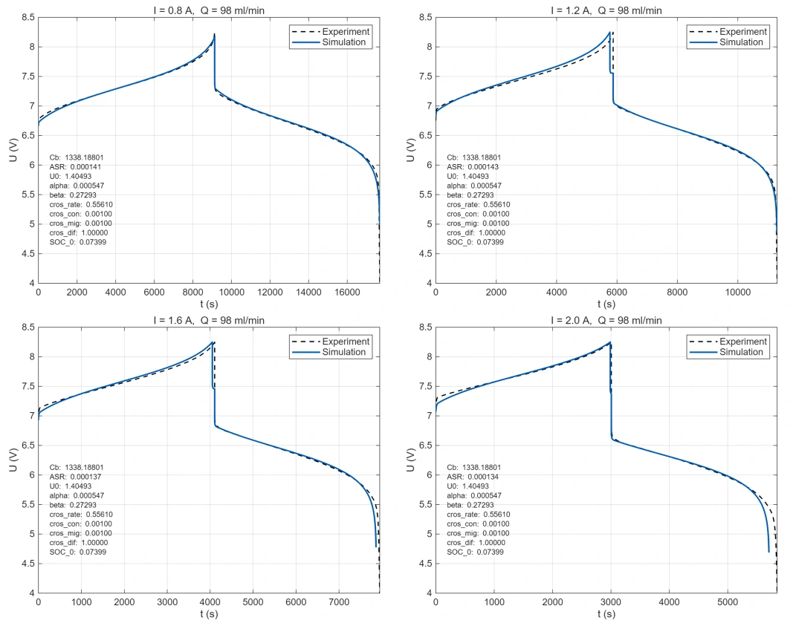
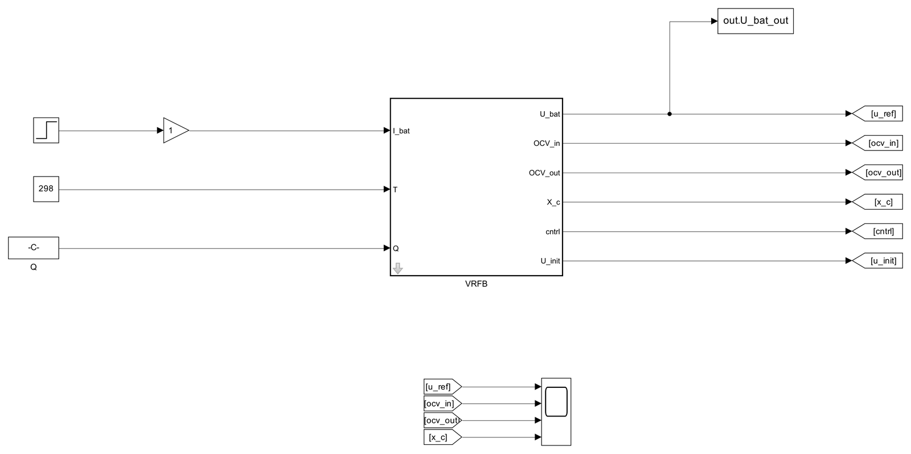
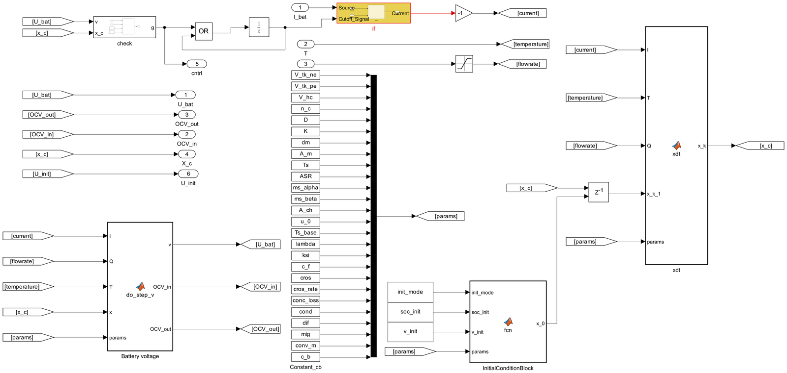
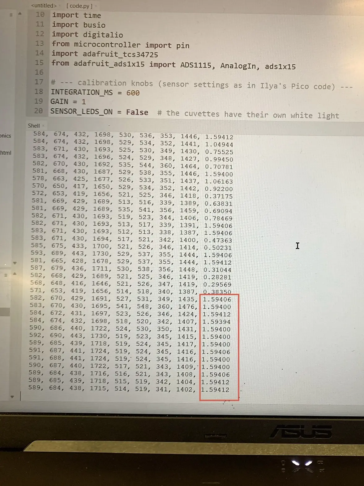
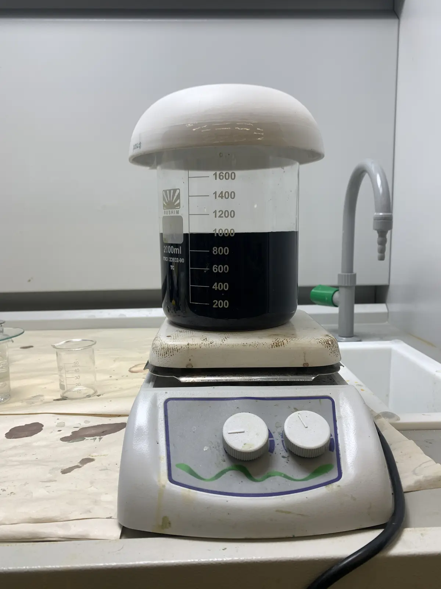
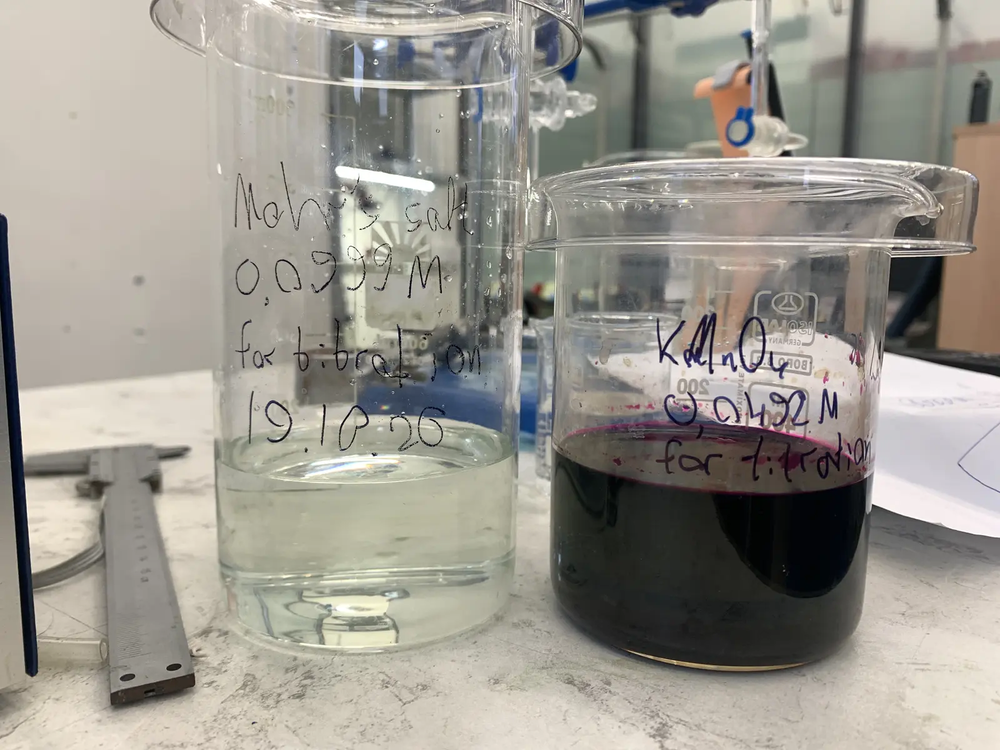
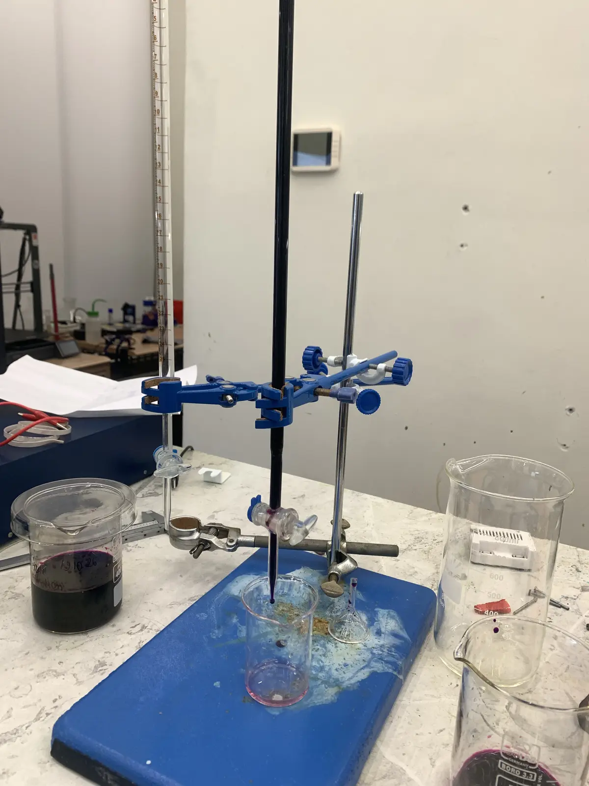

Research / MSc thesis
Understanding the battery
behind the voltage.
I work on digital twins and parameter identification for vanadium redox flow batteries. The question is not just whether a model fits, but what that fit tells us about the physical battery.
Latest from the bench · reader calibration, titration & ten-cycle experiment ↓
Conceptual schematic; animation illustrates circulation and electron flow, not measured operation.

01 / The digital twin
A model that meets
the measurements.
In the first year of my MSc, I built a zero-dimensional flow-battery model in Simulink using the laboratory’s established physics. The model tracks electrolyte concentrations and stack voltage, can start from state of charge or measured voltage, and includes charge and discharge protection.
I fitted it to six polarisation curves and four laboratory charge–discharge cycles using a two-stage identification method adapted from the lab’s published work. A shared physical parameter set reproduced the four cycles with a mean voltage RMSE of 0.065 V in Simulink; area-specific resistance was retuned for each current. As an independent check, the fitted formal potential lands within 4 mV of the directly measured open-circuit voltage, and the fitted initial state of charge matches a Nernst estimate.
The next question was identifiability. Repeating the fit from different starting points showed that a good voltage fit does not uniquely determine every physical parameter. Formal potential, resistance, and concentration can compensate for one another.
Research repositoryScope: one five-cell stack and one experimental campaign. The voltage error describes the fitted laboratory cycles; it is not a general battery-accuracy guarantee.

Model structure




02 / Cell design
From CAD
to the cell.
Alongside the modelling work, I use Autodesk Fusion for 3D CAD and assembly modelling of our vanadium redox flow-battery cells.
The Fusion assembly and the corresponding physical cell show the link between CAD and the laboratory hardware: layered cell components, end plates, fasteners, and electrolyte connections.


03 / Current direction
From fitting
to diagnostics.
Can the inferred drift be trusted?
I study how modelling and identification choices affect cycle-by-cycle estimates of effective crossover drift in vanadium redox flow batteries. A low voltage error does not necessarily mean the inferred degradation trend is physically correct.
The current work compares least-squares identification and physics-constrained neural parameter functions, with particular attention to carrying electrolyte state across cycles, separating operating-condition effects from health trends, and testing identifiability.
Recent synthetic comparisons retain condition-aware least squares as the working baseline; they do not establish a general neural-network advantage in physical parameter identification. Optimiser convergence, transfer to unseen conditions, and independent experimental checks remain active research questions.
04 / Experimental phase · 28 October to 2 November 2026
Building the tools.
Starting the measurements.
A second measurement setup, a custom pipette stand, a ten-cycle experiment on vanadium oxidation states, a calibrated reader, and titrants for analysing the electrolyte.
01 / Low-cost instrumentation
More measurements,
with the hardware we have.
With one battery analyzer shared in the laboratory, I built a low-cost reader to support a second setup. An ESP32 brings together an ADS1115 voltage module and two colour sensors, with readings sent to a computer. The aim is to monitor open-circuit voltage (OCV) and electrolyte colour alongside the main experiments.
It is a practical instrumentation prototype: assembling the electronics, integrating the sensors, and getting a live data stream working. A first two-point calibration is done (see 04 below); comparison against laboratory measurements on the battery comes next.


| Role | DIY reader | Laboratory analyzer |
|---|---|---|
| Purpose | OCV and colour monitoring | Controlled charge–discharge cycling and electrical measurements |
| Stage | Prototype; two-point calibration done, validation on the battery ahead | Existing laboratory test equipment |
02 / CAD to printed hardware
A stand for
the new micropipette.
I also designed and 3D-printed a stand for our new IKA PETTE vario micropipette. The packaging identifies the 100–1000 µL model, used for transferring small, adjustable liquid volumes.
The Fusion model and printing footage show the path from a simple laboratory need to a physical accessory: CAD, fabrication, and a dedicated place for the new pipette.
IKA PETTE vario · device reference ↗

03 / Ten-cycle study · First run complete
Watching more
than the voltage.
The first run of a ten-cycle experiment investigating vanadium oxidation states is now complete. Alongside the electrical measurements, cameras recorded electrolyte volume changes and colour sensors provided an additional optical signal.
The aim is to bring voltage, colour, volume and titration results together as independent checks on what is happening in the electrolyte. Analysis is in progress; conclusions will follow.
04 / Calibration · 2 November 2026
Checking the reader
before trusting it.
Before using the DIY reader on the flow battery, I checked its voltage channel at two points. For the zero point, I connected the ADS1115 input directly to ground. For the span point, I measured a 1.5 V alkaline cell with the reader and a handheld multimeter at the same time.
The zero reading settled at about −0.06 mV. On the cell, the reader gave a steady 1.594 V with about 0.1 mV of scatter, and the multimeter showed 1.59 V. Both points agree, so the scale and offset in the firmware stay at 1.0 and 0. With the input left open, the channel floats at about 0.29 V. That is normal for an unconnected ADC pin, and it is a reason to check every connection before logging.
Why this matters: near half charge, the open-circuit voltage of a vanadium cell changes by roughly 2 mV for each 1% of state of charge (Nernst equation). Any voltage error becomes a state-of-charge error.
Limit of this check: the multimeter shows three digits, so it confirms agreement to about ±10 mV, roughly ±5% state of charge near half charge. The reader’s own noise is far smaller than that.
Next, I plan to check the reader against a higher-resolution meter or a precision voltage reference, add more points between 0 and 1.7 V to test linearity, switch to a differential measurement (A0 to A1) so pumps and chargers cannot add ground offsets, and add a pull-down resistor so an open input reads zero instead of a false voltage.
| Point | Reference | DIY reader | Result |
|---|---|---|---|
| Zero | Input connected to ground (0 V) | −0.06 mV | Offset negligible |
| Span | 1.5 V alkaline cell, multimeter: 1.59 V | 1.594 V | Agrees within the meter’s resolution |



05 / Wet chemistry · 28 October to 2 November 2026
Preparing titrants
for the electrolyte.
With the first ten-cycle run complete, the next question is what the electrolyte actually contains. Redox titration gives the average vanadium oxidation state of a sample, and with it a reference state of charge. It does not depend on the voltage or colour signals, so it can be used to test them.
I use two titrants. Potassium permanganate (KMnO₄) is an oxidant: it takes V²⁺, V³⁺ and VO²⁺ up to VO₂⁺. Mohr’s salt, (NH₄)₂Fe(SO₄)₂·6H₂O, is a stable source of Fe²⁺: it reduces VO₂⁺ back to VO²⁺. Between them, they cover every vanadium oxidation state in the battery.
Standardise first.
Neither titrant can be trusted at its weighed concentration. Permanganate slowly decomposes to MnO₂ and reacts with traces of organic matter in the water. I prepared a litre, heated it covered on a stirring hotplate, and standardised it against oxalic acid as the primary standard:
2MnO₄⁻ + 5H₂C₂O₄ + 6H⁺ → 2Mn²⁺ + 10CO₂ + 8H₂O.
This reaction is slow at room temperature and speeds up once Mn²⁺ forms, which is why heat helps. The endpoint is the sharp loss of the permanganate colour.
Mohr’s salt was dissolved with sulfuric acid, which stops Fe²⁺ from hydrolysing and oxidising in air. I then standardised it against the permanganate:
MnO₄⁻ + 5Fe²⁺ + 8H⁺ → Mn²⁺ + 5Fe³⁺ + 4H₂O.
Here permanganate is its own indicator: the endpoint is the first faint pink that stays.
The labels on the bottles give nominal concentrations from the weighed masses. The standardised values differ from them, which is exactly why this step comes first. The titrants are now ready for analysing electrolyte samples from each cycle; the results will be reported with the full analysis.
Other options exist. Potentiometric titration with a platinum electrode gives a sharper endpoint and can be automated. Cerium(IV) sulfate is a more stable oxidant than permanganate. UV-vis spectroscopy reads oxidation state from the absorption spectrum without using up the sample. Classic visual titration needs only standard glassware and reagents, and it gives an absolute reference to calibrate the other methods against.






All clips play silently on a loop at 2× speed when in view. Use the controls to pause. Automatic playback respects reduced-motion preferences.
Research notes
Where things stand.
Progress through 2 November 2026
First ten-cycle run complete; reader calibrated; titrants ready
Completed the first ten-cycle oxidation-state run, checked the DIY reader at zero and against a multimeter on a 1.5 V cell, and standardised permanganate and Mohr’s salt titrants for analysing the electrolyte. See the calibration and titration →
Experimental phase begins
Built a DIY OCV and dual-colour reader for a second setup, designed and printed a micropipette stand, and began a ten-cycle oxidation-state experiment with camera and colour monitoring. See the hardware and experiment footage →
Forward-model checks and optimisation diagnostics
Cross-checked an adopted forward model in MATLAB and Simulink and traced line-search failures in hard-clipped neural outputs. Controlled continuations improved the training objective, while convergence and held-out performance remain unresolved.
Structured identification against a least-squares baseline
Compared cycle-wise least squares, condition-aware least squares, and a structured neural parameter model on synthetic drift scenarios. The tests support keeping least squares as the working baseline and do not establish a general neural advantage.
A draft on state resets and crossover drift
Prepared a manuscript using synthetic records with known truth and a public cycling record. Read the draft abstract below →
First-year digital-twin report
Completed the account of the Simulink model, protection logic, experimental fitting, and parameter-identifiability limits.
Electrolyte analysis
Validate the DIY reader on the battery, titrate electrolyte samples from each cycle, and compare the voltage, colour, volume and titration records.
Manuscript / In preparation
State resets,
crossover drift.
Draft abstract · 21 October 2026
Not peer reviewed
Identifying Cycle-by-Cycle Crossover Drift in a Vanadium Redox Flow Battery: State Resets and Neural Parameter Functions
Estimates of the effective crossover rate of a vanadium redox flow battery, made once per cycle, may help to monitor its membrane. But they can also absorb errors in the initial state and in the voltage model. This paper studies two choices in a zero-dimensional model: balanced electrolyte restarts each cycle, and per-cycle parameters represented by physics-constrained deep neural networks (PCDNN) of current and cycle number. It uses synthetic records with known truth and a public 34-cycle cell test. On a record whose electrolyte state runs on, per-cycle restarts give a drift of +122.4 ± 4.3% against a true +35.0% (mean ± SD over ten noise seeds), at a voltage RMSE of only 2.44 mV against 2 mV of noise. Carrying the state across cycles gives +35.0 ± 0.2%. Where the restart is correct, a small PCDNN returns +26.6 ± 0.9% on the same seeds and depends on its start, against +34.2 ± 0.7% for per-cycle least squares. On the real record, the chained fit gives +17.5%, with the same sign and a comparable size as the model-free trend in coulombic loss (+23.0%). This exploratory result depends on the drift window and on the end-of-discharge model.
Writing
Reports & work in progress.
My current writing includes a manuscript draft, a first-year research report, and a completed course-project report. The manuscript is work in preparation and has not been peer reviewed.
A digital twin for a vanadium redox flow battery: Simulink model, protection logic and parameter identification on a five-cell stack. Research report.